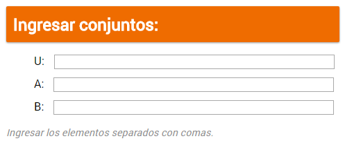
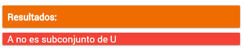
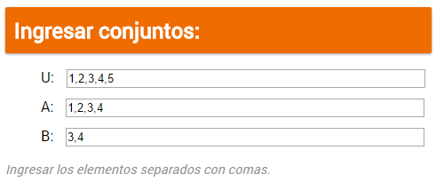
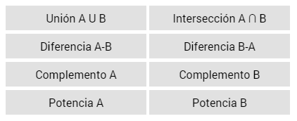
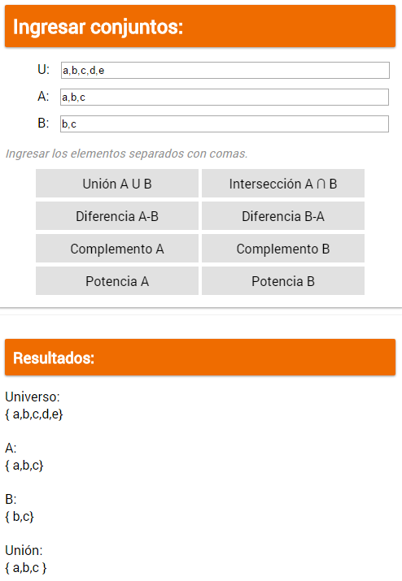
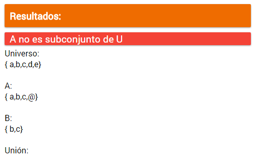

Se ingresan los datos en los campos:
Se deben insertar los elementos con comas entre ellos. Por ejemplo, los elementos "1", "2", "a" se ingresan:
Los conjuntos A y B deben ser subconjuntos de U, de lo contrario se abrirá un error similar:
Se puede usar cualquier número o letra como entrada, e.g.:
Igualmente se pueden introducir caracteres especiales:
Nota: no se pueden usar comas como elementos. Si se intoduce un espacio se tomará como parte del elemento.
Un ejemplo de una entrada de datos válida: 
La aplicación puede manejar elementos de más de un caracter mientras no se divida con una coma, por ejemplo, en la sieguiente entrada "abc" es un solo elemento:
La aplicación también permite operar con conjuntos vacíos. Estos se pueden declarar insertando una coma sin un elemento que le siga, por ejemplo:
Estos se convertirán automáticamente a ∅.
La aplicación también es capaz de procesar arreglos con duplicados, por ejemplo, la entrada:
Será interpretada como:
Todas las operaciones que se pueden realizar se encuentran en los botones:
Para hacer una operación solo se requiere hacer clic en el boton deseado, e.g.:
Para hacer una operación diferente basta hacer clic en el boton deseado.
Los valores de los arreglos se pueden modificar en cualquier momento.
En caso de desplegarse un error como este:
Es necesario corroborar que A y B sean sunconjuntos de U.
El programa se basa en el uso de arreglos para realizar las operaciones con los conjuntos.
Estos se obtienen de la entrada de texto que es separada en un arreglo por comas, esto implica una gran variedad en cuanto a lo que puede ser un elemento, incluyendo la posibilidad de elementos de varios caracteres, o de caracteres especiales.
También permite la manipulación de conjuntos vacíos que se ingresan insertando un elemento vacío.
El funcionamiento resumido del código:
Se utilizan varios métodos para hacer las operacioens, pero la mayoría depende de la función isInArray(), que determina si un elemento existe en un conjunto dado.
Para la generación del conjunto potencia se utiliza conteo en binario.